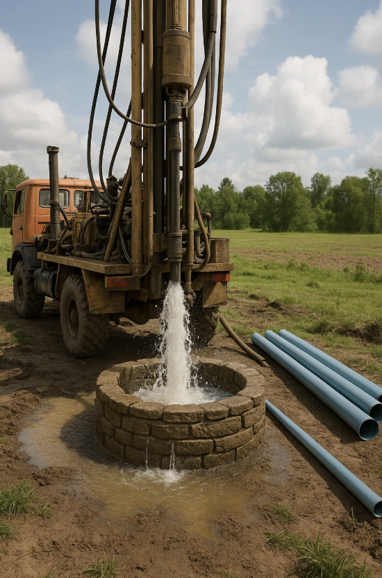

Why Water Changes Everything
785 million people lack access to clean water
Children Affected
Every 2 minutes a child dies from water-related disease
Women's Burden
Women spend 200 million hours daily collecting water
Our Solutions

Well Drilling
Deep borehole wells serving entire communities
Rainwater Catchment
Systems for areas with seasonal rainfall